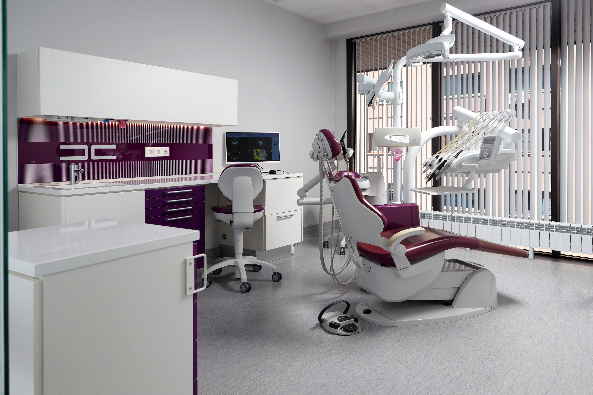
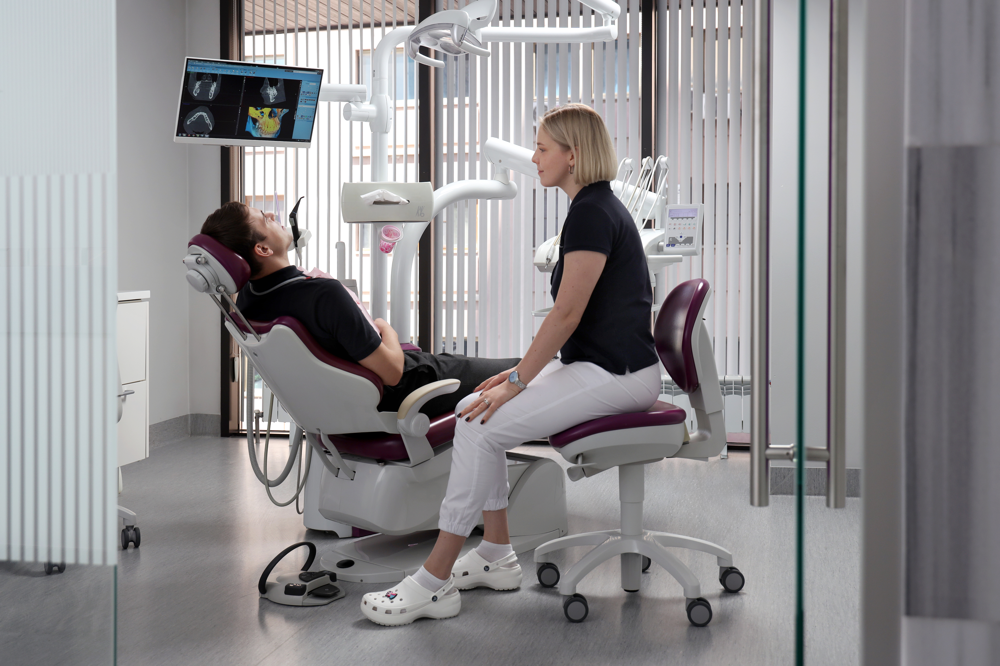
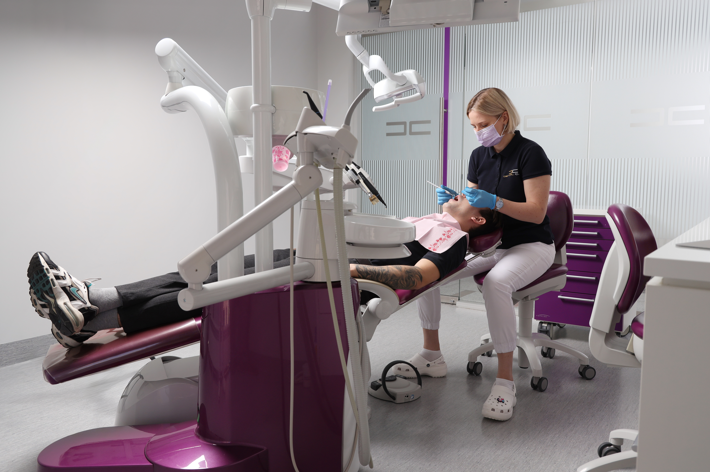

MENYU
-(1).svg)
RUS
Эстетическая ортодонтия
MENYU
RUS
Эстетическая ортодонтия
Эстетическая ортодонтия - область стоматологии,
специализирующаяся на коррекции прикуса - выравнивании
зубов и создании улыбки вашей мечты
Ортодонтическое лечение не имеет строгих возрастных рамок
и может проводиться как взрослых пациентов, так и детей!


Ортодонтия в Dental Club - это:
Цифровые методы диагностики и планирования лечения по
международным стандартам и протоколам.
Лучшие самолигирующие брекет-системы, производящиеся в
США (H4, American Orthodontics).
Системы съёмного ортодонтического лечения от компании
Invisaline, лидера среди производителей элайнеров в мире.
Детская ортодонтия, позволяющая избежать проблем с
прикусом в более позднем возрасте, благодаря ранней
диагностике и своевременному лечению


элайнеры
Это индивидуально изготовленные капы из специального
прозрачного материала. Они используются для коррекции зубов и
считаются наиболее быстрым, современным и безболезненным
методом ортодонтического лечения.
В клинике Dental Club мы используем элайнеры от международного
лидера Invisaline (США). Такие элайнеры отличаются от других
высоким качеством, цифровыми методами моделирования
результата – Clincheck и надёжным сервисом.
Элайнеры удобны и практически не заметны в повседневной жизни,
а их форма создаётся по цифровой модели ваших зубов. В отличие
от брекет-систем элайнеры можно снимать во время еды и чистки
зубов.
Весь процесс лечения пациент может увидеть в цифровом формате.
Каждый набор кап соответствует определённому этапу движения
зубов в полости рта.
Специалисты нашей клиники смогут подробно проконсультировать
Вас по этапам коррекции прикуса и помогут Вам получить идеально
ровные зубы.
Dental Club является сертифицированной клиникой по продуктам
компании Invisaline. Мы оказываем пациентам поддержку, в течение
всего периода лечения.

Этапы лечения кариеса (пломбы)
1-ое посещение
Обезболивание
Препарирование кариозного процесса и удаление старых
реставраци
Снятие слепка
Изготовление временной пломбы
Пришлифовка и полировка временной пломьбы
2-ое посещение
Обезболивание
Удаление временной пломбы
Обработка вкладки и полости зуба
Фиксация вкладки на композиционный цемент
Пришлифовка и полировка
.jpg)
вопрос / ответ
Сколько стоит услуга?
Какие процедуры входят в диагностическое обследование?
Нужно ли удалять зубы мудрости перед ортодонтическим лечением?
Как долго мне нужно будет носить элайнеры?
Количество элайнеров рассчитывается в зависимости от исходной ситуации.
Точное количество кейсов высчитывается компанией
Invisaline.
Почему элайнеры стоят дорого?
Главная
услуги
Команда